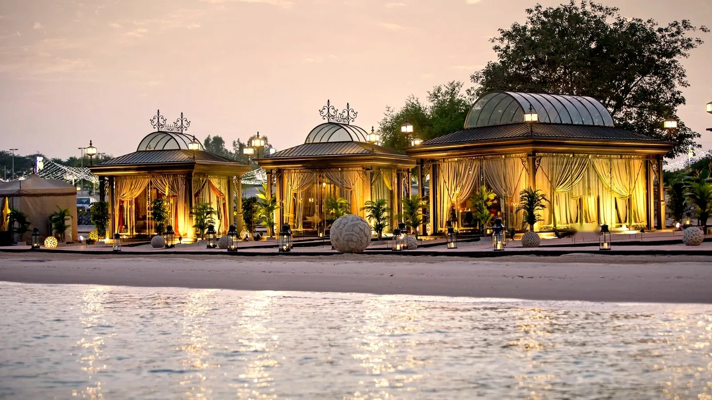

Domed glass pavilions · Beach hospitality
The Beach Dome Pavilions
The project
The Beach Dome Pavilions
The Beach Dome Pavilions are a row of freestanding glass cabanas set along a sand beach for a hospitality venue. Each one is a square glazed room under a pitched metal roof, crowned by a raised glazed dome and an ornamental finial.
By day, curtains drawn inside the glazing give guests shade and privacy while the sea stays in view. After dark, warm light inside the domes turns the row of pavilions into a line of lanterns along the shore.
- Location
- Antalya, Türkiye
- Use
- Private beach cabanas for a hospitality venue
- Year
- 2024
- Structure
- Group of freestanding square pavilions
- Frame
- Steel, dark grey finish
- Roof
- Pitched metal roof with a raised glazed dome and ornamental finial
- Glazing
- Full-height glazing with internal curtains
- Setting
- Sand beach with timber boardwalks and lantern lighting
- Stage
- Completed structure
- Made by
- Steelwork fabricated and installed by our partner ironwork atelier in Türkiye
A pavilion designed to be repeated
The pavilions share one design, repeated along the beach. A dark steel frame sets out the square plan, with full-height glazed panels between slender posts and a deep fascia at the eaves. Above, the roof rises in four pitched planes to a glazed drum and dome, so daylight falls into the centre of the room as well as through the walls.
Repeating a single module keeps the group coherent and makes fabrication efficient: frames, roof panels and ornament are made in the workshop as a set and assembled on site. The same principle lies behind the classical glasshouses of the nineteenth century, as our Journal article on the Crystal Palace explains.
Design and build
Building for a beach
A beach is a demanding setting for steel and glass. Salt air, wind-blown sand and strong sun all affect the choice of coating, glazing and fixings. Corrosion protection beneath the finish coat, sealed joints and drainage paths matter even more than in a garden, and the pavilions sit on prepared bases with timber boardwalks between them so sand stays off the floors.
Similar designs
Develop your project
FROM A REFERENCE.
TO YOUR OWN SPACE.
Compare the Domed Hospitality Pavilions design, read about the Winter Dome Pavilion, or explore garden pavilions for hospitality and private gardens.
Share the setting and the direction you are drawn to, and we will discuss your garden project.
Your next space
LET’S BEGIN
WITH YOUR IDEAS.
Share the setting, the way you want to use the space and the designs you are drawn to.
Plan your project